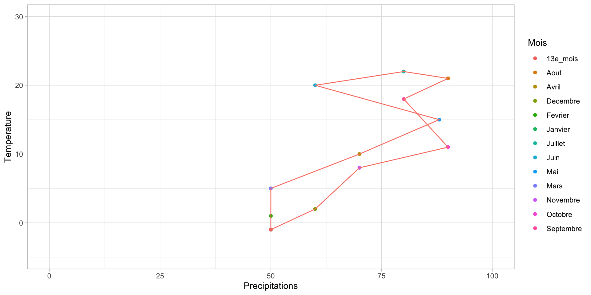
TD2 : Analyse du climat
S1SV222 - Introduction à l’écologie : organisation et fonctionnement de la biosphère
Dorothée NEFF
Université de la Réunion
2025-03-28
La forêt tempérée
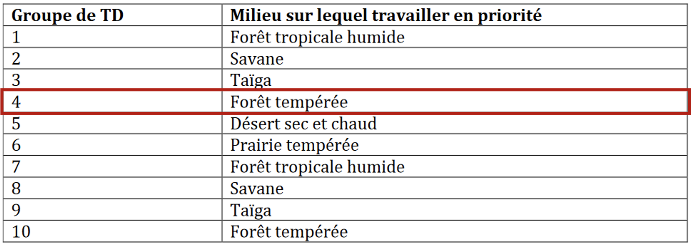
La forêt tempérée

 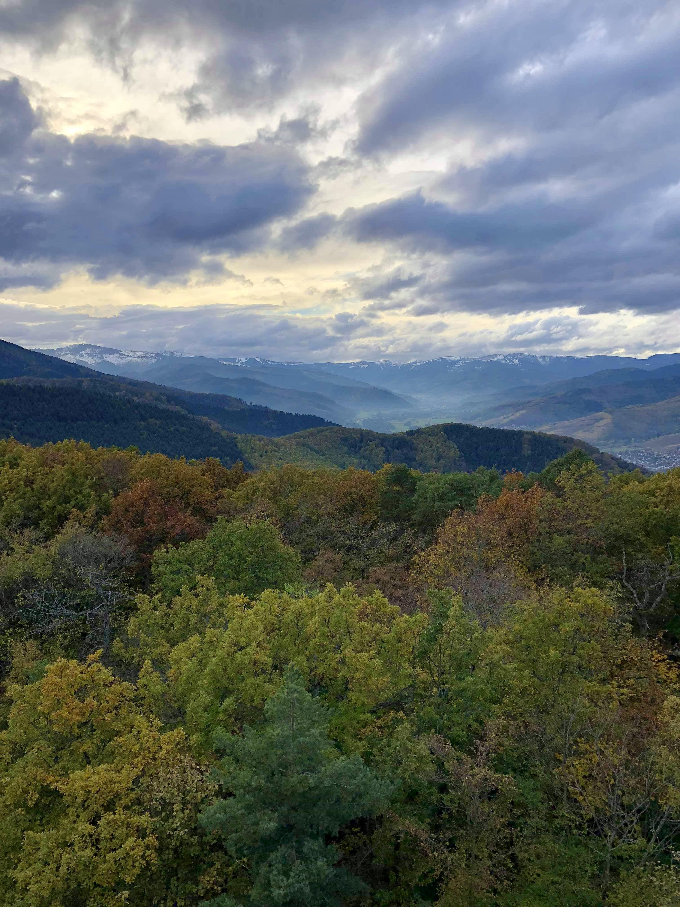
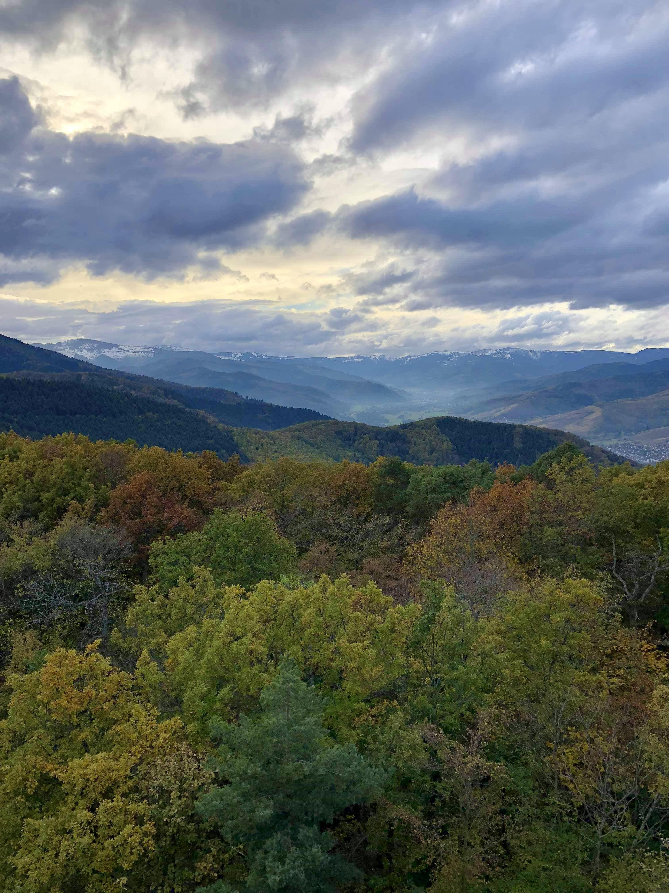
Répartition de la superficie forestière mondiale par domaine climatique
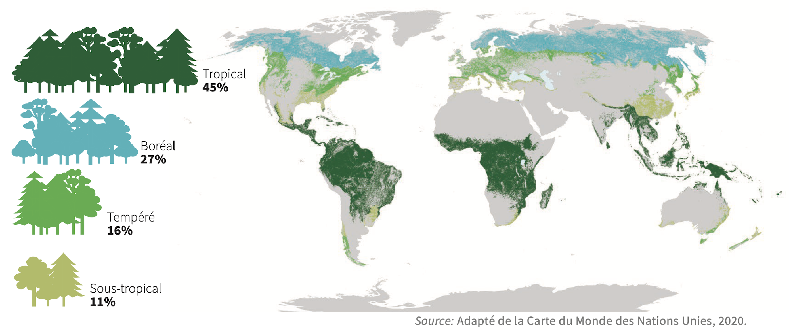
- Une forêt tempérée est un biome caractérisé par la présence de saisons bien définies, des températures entre -30°C et +30°C et des précipitations annuelles entre 75 et 150 cm.
Exercice 1
À partir des données de températures et de pluviométrie, décrire le climat de chaque biome et lui attribuer un climat dominant.
Pour cela :
- Calculer l’indice annuel de De Martonne : \(I = \frac{P}{10+T}\)
- Calculer l’indice mensuel de De Martonne : \(i = \frac{12*p}{10+t}\)
Avec P = précipitations annuelles, T = température moyenne annuelle, p = précipitations mensuelles et t = température moyenne mensuelle
Récupération graphique des données
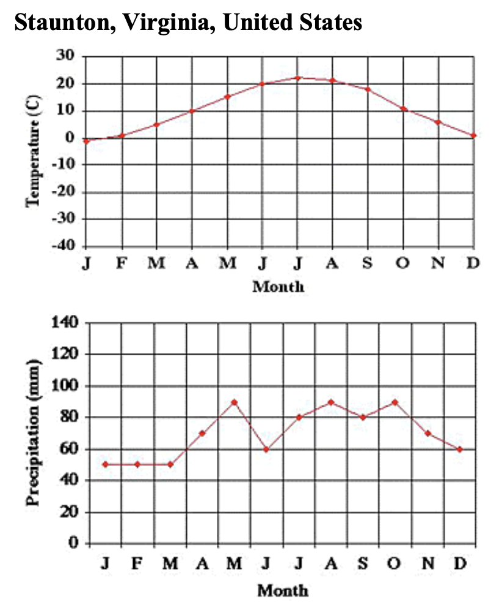
| Mois | Température (°C) | Précipitations (mm) |
|---|---|---|
| Janvier | -1 | 50 |
| Février | 2 | 50 |
| Mars | ||
| Avril | ||
| Mai | ||
| Juin | ||
| Juillet | ||
| Août | ||
| Septembre | ||
| Octobre | ||
| Novembre | ||
| Décembre |
Calcul de l’indice mensuel d’aridité de De Martonne
- Rappel de l’équation de l’indice mensuel de De Martonne : \(i = \frac{12*p}{10+t}\)
Warning
Utiliser la valeur absolue de t sinon vous aurez un indice négatif.
| Mois | Température (°C) | Précipitations (mm) | i mensuel | Type de milieu |
|---|---|---|---|---|
| Janvier | -1 | 50 | 55 | Humide |
| Février | ||||
| Mars | ||||
| Avril | ||||
| Mai | ||||
| Juin | ||||
| Juillet | ||||
| Août | ||||
| Septembre | ||||
| Octobre | ||||
| Novembre | ||||
| Décembre |
Correction des indices mensuels de De Martonne
| Mois | Température (°C) | Précipitations (mm) | i mensuel | Type de milieu |
|---|---|---|---|---|
| Janvier | -1 | 50 | 55 | Humide |
| Février | 1 | 50 | 55 | Humide |
| Mars | 5 | 50 | 40 | Humide |
| Avril | 10 | 70 | 42 | Humide |
| Mai | 15 | 88 | 42 | Humide |
| Juin | 20 | 60 | 24 | Sub-humide |
| Juillet | 22 | 80 | 30 | Sub-humide |
| Août | 21 | 90 | 35 | Humide |
| Septembre | 18 | 80 | 34 | Humide |
| Octobre | 11 | 90 | 51 | Humide |
| Novembre | 8 | 70 | 47 | Humide |
| Décembre | 2 | 60 | 60 | Humide |
Calcul de l’indice annuel d’aridité de De Martonne
- Rappel de l’équation de l’indice annuel de De Martonne : \(I = \frac{P}{10+T}\)
Avec P = précipitations annuelles, T = température moyenne annuelle
\[ I = \frac{P}{10+T} = \frac{838}{10 + 11} = 40 \] 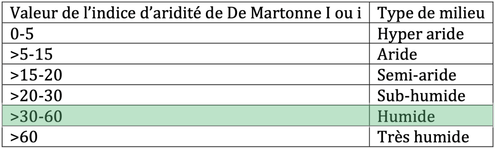
Exercice 2
Tracer un climatogramme. Pour cela, pour chaque biome, tracer pour chaque mois de l’année, les valeurs de précipitations en abscisse et les températures en ordonnées. Relier les 12 mois de l’année pour représenter un polygone. A partir de la forme des polygones obtenus, classer les climats des différents biomes.
Climatogramme de la forêt tempérée
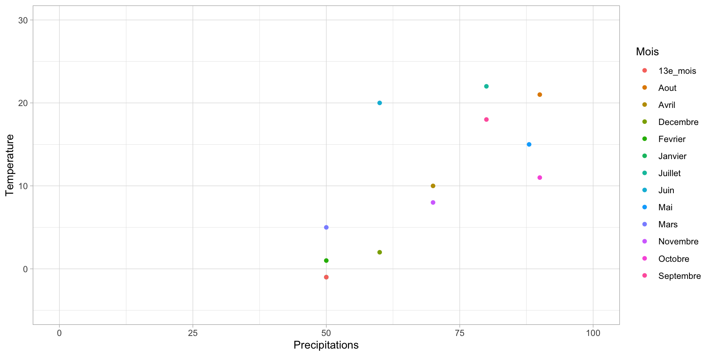Correction du climatogramme de la forêt tempérée
Si le polygone est :
- allongé verticalement = saisons marquées par les changements de températures
- allongé horizontalement = saisons marquées par les changements de précipitations
- plotôt rond = il y a des changements marqués tout au long de l’année
Autre exemple : le désert chaud
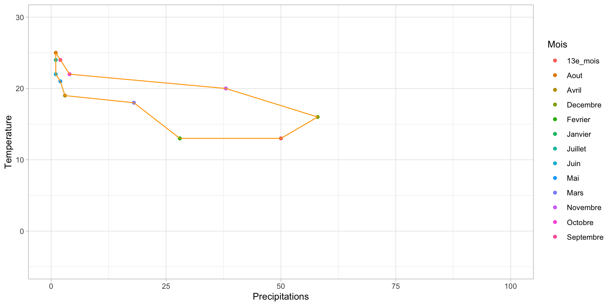
Exercice 3
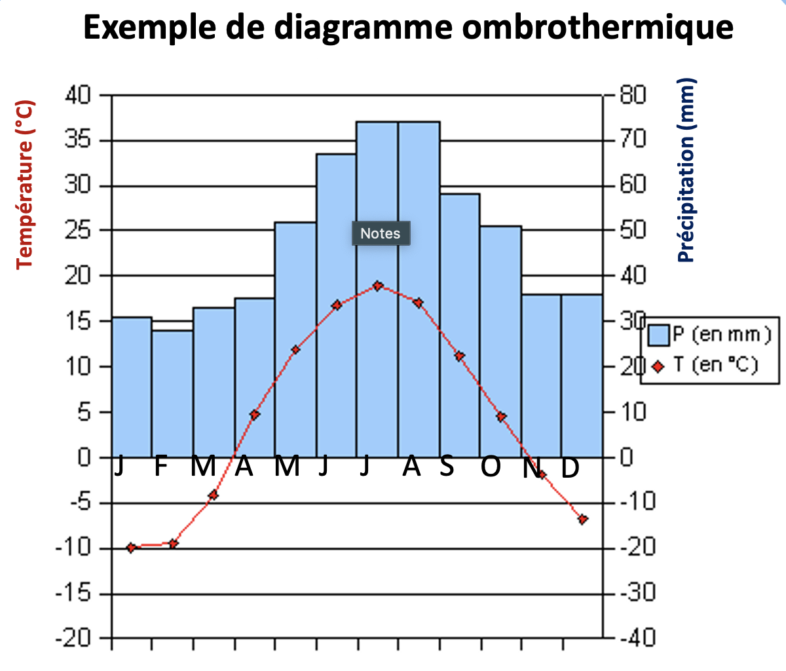
Tracer des diagrammes ombrothermiques.
Règles à suivre :
On porte sur l’axe horizontal les mois de l’année, sur l’axe vertical à gauche les températures et sur un axe vertical à droite les précipitations
Les zéros des deux axes verticaux doivent se correspondre. Par convention, une unité de précipitation = à deux unité de température (par exemple : sur l’axe vertical une température de 10°C correspond à une précipitation de 20 mm)
Si les précipitations dépassent les 100 mm mensuelles, au delà de cette valeur, on multiplie l’échelle température / précipitations par 5 au lieu de 2, pour réduire la dimension verticale du graphique
On représente les précipitations mensuelles par des histogrammes de couleur bleue et les températures mensuelles par des points reliés par une courbe rouge
Les histogrammes qui dépassent les 100 mm sont hachurés pour mettre en évidence, le changement d’échelle. Indiquer sur le diagramme les précipitations et les températures annuelles (somme et moyenne respectivement).
Interprétation du diagramme ombrothermique
Notions importantes :
Mois sec : Lorsque la barre des précipitations est sous la courbe des températures
Mois humide : Lorsque la barre des précipitations dépasse la courbe des températures
Mois froid : Mois dont la température moyenne reste sous 0°C
Amplitude thermique : Différence entre la température maximale et minimale du graphique (attention aux valeurs négatives si mois froid…)
S’il existe des températures négatives, indiquez le nombre de mois
Analyses des précipitations :
Calculez la hauteur annuelle des précipitations
Pleut-il chaque mois et durant quelle saison se situe le maximum de précipitations ?
Correction du diagramme ombrothermique de la forêt tempérée
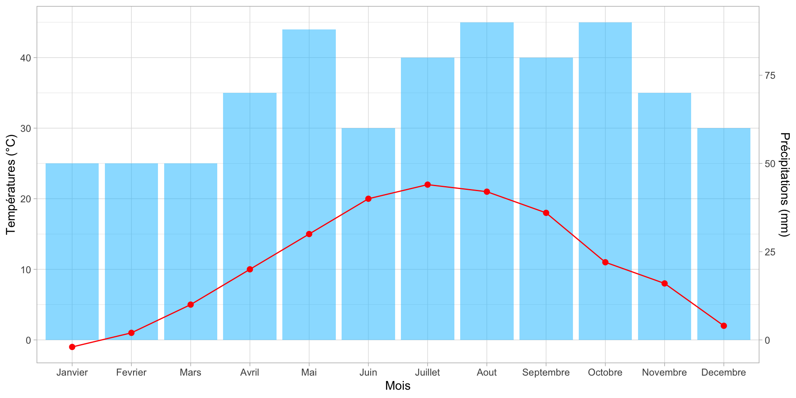
Notions importantes :
Mois sec : 0
Mois humide : 12
Mois froid : 1
Amplitude thermique : 23 °C
Analyses des précipitations :
Hauteur annuelle des précipitations : 838 mm
Il pleut tous les mois, le maximum de précipitations sont au mois d’août et au mois d’octobre.
Quel type de climat correspond à ce biôme ?
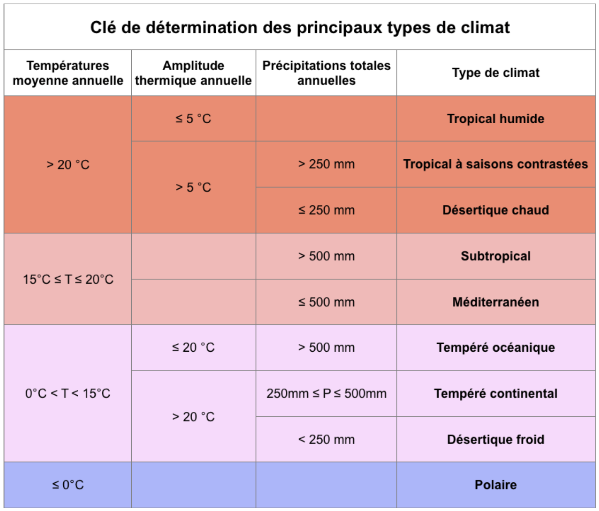
Forêt tempérée de Staunton, Virginia, USA :
Température annuelle : 11 °C Précipitation annuelle : 838 mm Amplitude thermique : 23 °C
Climat tempéré océanique
Autre exemple : le désert chaud
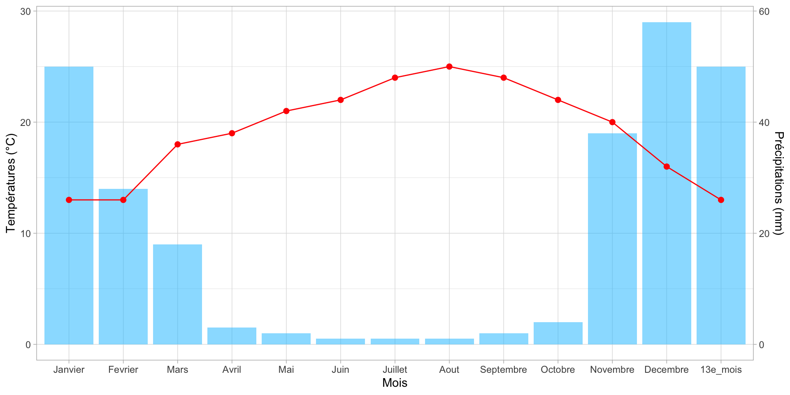
Désert chaud et sec d’El-Oasr el-Akhdar, Egypt :
Température annuelle : 19.2 °C Précipitation annuelle : 256 mm Amplitude thermique : 12 °C
Climat désertique chaud
Comment interpréter les indices de De Martonne
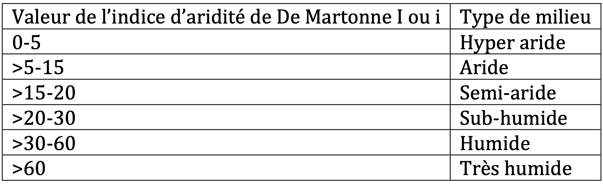